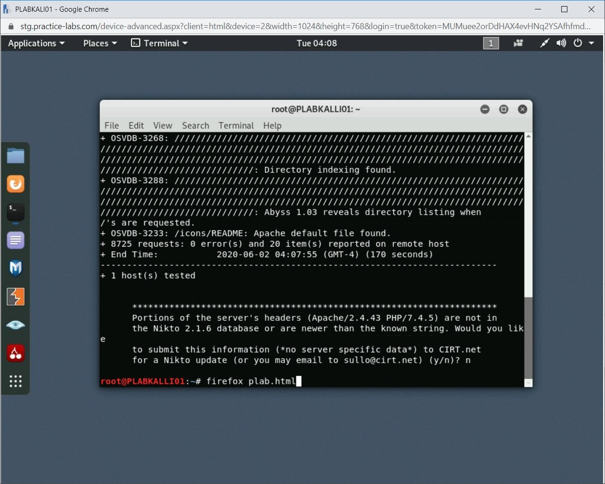

Introduction
9beca326-b493-4b0e-b3dc-d7dfb77df3c9
Welcome to the Web Application Scanners Practice Lab. In this module, you will be provided with the instructions and devices needed to develop your hands-on skills.
dc640c20-9434-45ea-b7c2-6d4d6a196bfc
Learning Outcomes
In this module, you will complete the following exercises:
- Exercise 1 - Web Application scanner
- Exercise 2 - Software assessment tools and techniques
After completing this module, you will be able to:
- Use OWASP Zed Attack Proxy (ZAP)
- Use Nikto
After completing this module, you will have further knowledge of:
- Static Analysis
- Dynamic Analysis
- Reverse Engineering
- Fuzzing
Exam Objectives
The following exam objectives are covered in this lab:
- 1.4 Given a scenario, analyze the output from common vulnerability assessment tools.
Note: Our main
focus is to cover the practical, hands-on aspects of the exam
objectives. We recommend referring to course material or a search engine
to research theoretical topics in more detail.
Lab Duration
It will take approximately 1 hour to complete this lab.
1b317064-7b0c-48e0-845c-05a2d99e80c5
Help and Support
For more information on using Practice Labs, please see our Help and Support page. You can also raise a technical support ticket from this page.
Click Next to view the Lab topology used in this module.
d2c53300-f951-45a9-9aa4-3d4ecae69e11
Lab Topology
During your session, you will have access to the following lab configuration.

Depending on the exercises, you may or may not use all
of the devices, but they are shown here in the layout to get an overall
understanding of the topology of the lab.
- PLABDC01 - (Windows Server 2019 - Domain Server)
- PLABDM01 - (Windows Server 2019 - Domain Member)
- PLABKALI01 - (Kali Linux 2019 - Linux Kali)
- PLABWIN10 - (Windows 10 - Domain Member Workstation)
- PLABCENTOS - (Centos 8 Linux - Stand-alone Linux Server)
- PLABALIENVAULT - (Alien Vault Linux Security Management Platform)
Click Next to proceed to the first exercise.
<
Home |
README |
Vulnerability Scanning and Enumeration and Assessment >
CompTIA Cybersecurity Analyst (CySA+) Practice Labs
Exercise 1 - Web Application Scanner
There is a high probability that a Web application has a
security flaw. It is not easy to detect security flaws unless you use a
security auditing tool or framework. One can use these security tools
to find vulnerabilities before a hacker does. Most organizations around
the world ensure that their applications are thoroughly tested before
they are made live. Over a period of time, the use of Web application
security tools has been widely accepted and has only increased.
Learning Outcomes
After completing this exercise, you will be able to:
- Use OWASP Zed Attack Proxy (ZAP)
- Use Nikto
Your Devices
You will be using the following devices in this lab. Please power these on now.

- PLABDC01 - (Windows Server 2019 - Domain Server)
- PLABKALI01 - (Kali Linux 2019 - Linux Kali)
- PLABWIN10 - (Windows 10 - Domain Member Workstation)
Task 1 - Verify that the DVWA is running
In this task, the DVWA will be started which will be needed in the following tasks to conduct web application exploits.
This task was performed in the Attack Types module. Please note that if DVWA has already been started, please continue to Task 2.
Step 1
Connect to PLABWIN10.
Figure 1.1 Screenshot of PLABWIN10: Displaying the Desktop.
Step 2
Click Start and select XAMPP Control Panel.
Figure 1.2 Screenshot of PLABWIN10: Displaying opening the XAMPP Control Panel.
Note: The XAMPP
application is used to host an Apache web application on Windows and
Linux operating systems. This application also configures the necessary
MySQL database for the installation. In the infrastructure, the
application has already been configured to run the DVWA.
Step 3
In the XAMPP Control Panel in the Actions column, select Start for the following services:
Apache
MySQL
Figure 1.3 Screenshot of PLABWIN10: Displaying starting the Apache and MySQL services using the XAMPP Control Panel.
Note: The Apache and MySQL services need to run for the DVWA to be accessible.
Step 4
Minimize the XAMPP Control Panel.
Figure 1.4 Screenshot of PLABWIN10: Displaying minimizing the XAMPP Control Panel.
Note: After
starting these services, it can be seen which ports are open for the
DVWA to function. Port 80 and 443 are used for web application traffic
on the network; port 80 uses the http protocol, and port 443 uses the
https protocol. The https protocol is more secure as it encrypts the
network, where the http protocol does not encrypt the traffic.
Step 5
From the Taskbar, open the Microsoft Edge web browser.
Figure 1.5 Screenshot of PLABWIN10: Displaying opening the Microsoft Edge Web browser from the Taskbar.
Step 6
In the Microsoft Edge browser, navigate to the following URL:
http://192.168.0.4/dvwa
Figure 1.6 Screenshot of PLABWIN10: Displaying browsing to the DVWA using Microsoft Edge.
Step 7
In Microsoft Edge, enter the following credentials and click Login:
Username: admin
Password: password
Figure 1.7 Screenshot of PLABWIN10: Displaying logging into the DVWA using the Microsoft Edge browser.
Step 8
In the Save password pop-up window, select Never.
Figure
1.8 Screenshot of PLABWIN10: Displaying the Microsoft Edge browser and
selecting not to save the password to log into the DVWA.
Note: After successful login, the different types of Web application exploits are shown.
Step 9
Close the Microsoft Edge browser.
Figure 1.9 Screenshot of PLABWIN10: Displaying closing the Microsoft Edge browser.
Step 10
Connect to PLABKALI01.
Figure 1.10 Screenshot of PLABKALI01: Displaying the Desktop.
Step 11
Select Firefox ESR in the menu bar on the left.
Figure 1.11 Screenshot of PLABKALI01: Displaying opening the Firefox ESR browser.
Step 12
Browse to the following URL in the Firefox ESR browser:
http://192.168.0.4/dvwa
Figure 1.12 Screenshot of PLABKALI01: Displaying browsing to the DVWA website.
Step 13
In Firefox ESR enter the following credentials and click Login:
Username: admin
Password: password
Figure 1.13 Screenshot of PLABKALI01: Displaying logging into the DVWA application using the Firefox ESR browser.
Step 14
Select Don’t Save in the pop-up window from Firefox ESR.
Figure 1.14 Screenshot of PLABKALI01: Displaying successfully logged onto the DVWA in Firefox ESR.
Note: The DVWA
was accessed remotely from PLABKALI01 using the Firefox ESR web browser.
By using Kali linux, specific web application vulnerabilities can be
exploited.
Step 15
Close the Firefox ESR web browser.
Task 2 - Use OWASP Zed Attack Proxy (ZAP)
OWASP ZAP is an application to test the Web application security and is used for finding vulnerabilities in Web applications. Using OWASP ZAP,
you can test for critical security flaws, such as directory browsing,
XSS flaw, remote OS command injection, cross-site scripting, and many
more.
In this task, you will use a vulnerable Website for the attack. This Website is known as DVWA. To use OWASP ZAP, perform the following steps:
Step 1
Ensure that you have powered on the required devices. Connect to PLABKALI01.
The desktop is displayed.
Figure 1.1 Screenshot of PLABKALI01: Showing the desktop of PLABKALI01.
Step 2
Click the Terminal icon in the application bar.
Figure 1.2 Screenshot of PLABKALI01: Clicking the Terminal icon in the application bar.
Step 3
You need to first install OWASP-ZAP; for which the installer is stored in the Downloads folder. Let’s first navigate to the Downloads folder using the following command:
cd Downloads
Press Enter.
Figure 1.3 Screenshot of PLABKALI01: Navigating to the Downloads folder.
Step 4
Let’s view the files kept in the Downloads folder. To do this, type the following command:
ls -l
Press Enter.
Figure 1.4 Screenshot of PLABKALI01: Listing the files in the Downloads folder.
Step 5
There is only one installer for OWAP ZAP in the Downloads folder.
Notice that there are no execute permissions on this installer. If you
attempt to run the installer, you will get the permission denied error.
To change the permissions on this installer, type the following command:
chmod o+x ZAP_2_9_0_unix.sh
Press Enter.
Figure 1.5 Screenshot of PLABKALI01: Changing the permissions on the installer with the chmod command.
Step 6
The command runs successfully but does not generate an output. To verify permissions, type the following command:
ls -l
Press Enter.
Figure 1.6 Screenshot of PLABKALI01: Listing the files in the Downloads folder.
Step 7
Execute permissions have been assigned to the installer.
Figure 1.7 Screenshot of PLABKALI01: Showing the changed permissions on the installer.
Step 8
Clear the screen by entering the following command:
clear
To install OWAP-ZAP, run the following command:
./ZAP_2_9_0_unix.sh
Press Enter.
 Figure 1.8 Screenshot of PLABKALI01: Running OWASP ZAP installer in the terminal window.
Figure 1.8 Screenshot of PLABKALI01: Running OWASP ZAP installer in the terminal window.
Step 9
The installation process starts.
Figure 1.9 Screenshot of PLABKALI01: Showing the start of the installation of OWASP ZAP.
Step 10
The Setup - OWASP Zed Attack Proxy 2.9.0 wizard is now displayed. On the Welcome to the OWASP Zed Attack Proxy Setup Wizard page, click Next.
 Figure 1.10 Screenshot of PLABKALI01: Showing the Welcome page of the OWASP installation wizard.
Figure 1.10 Screenshot of PLABKALI01: Showing the Welcome page of the OWASP installation wizard.
Step 11
On the License Agreement page, select I accept the agreement and click Next.
Figure 1.11 Screenshot of PLABKALI01: Selecting the agreement and click Next on the License Agreement page.
Step 12
On the Select Installation Type page, keep the default selection of Standard installation and click Next.
Figure
1.12 Screenshot of PLABKALI01: Clicking Next with the default selection
of Standard Installation on the Select Installation Type page.
Step 13
On the Ready to Install page, review the configuration settings, and click Install.
Figure 1.13 Screenshot of PLABKALI01: Reviewing the configuration on the Ready to Install page and clicking Next.
Step 14
The installation process for OWASP ZAP now starts.
Figure 1.14 Screenshot of PLABKALI01: Showing the OWASP ZAP installation in progress.
Step 15
Once installation is complete, click Finish on the Completing the OWASP Zed Attack Proxy Setup Wizard page.
Figure 1.15 Screenshot of PLABKALI01: Clicking Finish on the Completing the OWASP Zed Attack Proxy Setup Wizard page.
Post-installation, close the terminal window.
Step 16
Click the first icon to display the menu, select Usual applications, select Other, and then select OWASP ZAP.
Figure 1.16 Screenshot of PLABKALI01: Selecting OWASP ZAP from the menu options.
Step 17
The OWASP ZAP application starts up. The OWASP ZAP splash screen is displayed. After the files are loaded, it will automatically close.
Figure 1.17 Screenshot of PLABKALI01: Showing the splash screen of OWASP ZAP.
Step 18
The OWASP ZAP window is displayed along with another OWASP ZAP dialog box. Select Yes, I want to persist in this session, but I want to specify the name and location. Click Start.
Figure 1.18 Screenshot of PLABKALI01: Selecting the persistence method for a ZAP session.
Step 19
The Save dialog box is displayed. Keep the default location to save the file. In the File Name textbox, overwrite the existing name with PLAB and click Save.
Figure 1.19 Screenshot of PLABKALI01: Saving the session information.
Step 20
You are now on the OWASP ZAP main window.
Note: The OWASP ZAP window has been maximized.
OWASP ZAP is equipped with a lot of powerful features.
However, in this task, you will simply provide the URL that you want to
attack and then start the attack.
In the right upper section, click Automated Scan.
Figure 1.20 Screenshot of PLABKALI01: Clicking the Automated Scan method in the OWASP session window.
Step 21
In the upper right section, in the URL to attack textbox, enter the following URL:
http://192.168.0.4/dvwa
Click Attack.
Figure 1.21 Screenshot of PLABKALI01: Setting the URL to attack in the URL to attack textbox.
Step 22
The attack is now being conducted.
Note: This attack may take a while to complete.
Figure 1.22 Screenshot of PLABKALI01: Showing the attack progress.
Step 23
After the attack is completed, you are automatically
navigated to the Alerts tab in the bottom section, which displays
several alerts that are categorized by vulnerability types.
Select any of the given vulnerability in the lower-left section.
The lower right section displays the details of the selected vulnerability.
Figure 1.23 Screenshot of PLABKALI01: Showing the output of the attack.
Step 24
It is important to note that the number mentioned in
brackets is the number of occurrences of the vulnerability in the
Website. Expand Directory Browsing and select the first occurrence.
The lower right section displays the URL, risk, and other related information.
Figure 1.24 Screenshot of PLABKALI01: Selecting a specific alert to explore it further.
Step 25
Scroll down in the lower right section. Notice that a solution is also mentioned in the Solution section.
For example, because the directory listing is enabled on the Website,
the solution suggests that you should disable directory listing.
Figure 1.25 Screenshot of PLABKALI01: Showing the solution for a specific type of alert.
Task 3 - Use Nikto
Nikto is a vulnerability scanner that is part
of Kali Linux. It is widely used by ethical hackers and penetration
testers to find the vulnerabilities in Web applications. In this task,
you will learn to use Nikto for vulnerability scanning.
To do this, perform the following steps:
Step 1
Ensure you have powered on all the devices listed in the introduction and connect to PLABKALI01. The desktop of PLABKALI01 is displayed.
Figure 1.26 Screenshot of PLABKALI01: Showing the desktop of PLABKALI01.
Step 2
On the desktop, click the Terminal icon if not already open.
Figure 1.27 Screenshot of PLABKALI01: Clicking the Terminal icon in the left pane.
Step 3
To scan a Website for vulnerabilities, type the following command:
Note: Instead of the -host parameter, you can also use the -h parameter. Both provide the same result.
nikto -host http://192.168.0.4
Press Enter.
Figure 1.28 Screenshot of PLABKALI01: Entering the nikto command with a host IP.
Step 4
The vulnerability scanning process starts. Depending on the number of vulnerabilities, the process may run for a few minutes.
 Figure 1.29 Screenshot of PLABKALI01: Showing the running process of the nikto command.
Figure 1.29 Screenshot of PLABKALI01: Showing the running process of the nikto command.
Step 5
A detailed list of vulnerabilities is listed as the output. Type n and press Enter to continue.
Figure 1.30 Screenshot of PLABKALI01: Showing the output of the nikto command.
Step 6
Clear the screen by entering the following command:
clear
To scan a Website for vulnerabilities and save the output to an HTML file, type the following command:
nikto -host http://192.168.0.4 -o plab.html
Press Enter.
Figure 1.31 Screenshot of PLABKALI01: Entering the nikto command with a host IP and output file name.
Step 7
Let the vulnerability scanning process complete. Type n and press Enter.
Then, type the following command:
firefox plab.html
Press Enter.
Figure 1.32 Screenshot of PLABKALI01: Opening the output file name with Firefox.
Step 8
A new Firefox window opens. Notice that the vulnerabilities are listed on the HTML Webpage.
 Figure 1.33 Screenshot of PLABKALI01: Showing the nikto output file in Firefox.
5552932f-e263-4095-bb6a-fa7be9031d50
Figure 1.33 Screenshot of PLABKALI01: Showing the nikto output file in Firefox.
5552932f-e263-4095-bb6a-fa7be9031d50
Close the Firefox window.
<
Home |
README |
Vulnerability Scanning and Enumeration and Assessment >
CompTIA Cybersecurity Analyst (CySA+) Practice Labs
Exercise 2 - Software Assessment Tools and Techniques
Software assurance is a process that is applied to
ensure that developed software is free from defects, bugs, and
vulnerabilities. Software developers intend to design clean software
that works well. However, there are usually errors or defects that are
built into the code unintentionally. Developers typically do not find
errors themselves. The software assurance team is responsible for
detecting such errors and defects.
There are different types of testing techniques that are used in software assurance. Some key types are:
- Static analysis
- Dynamic analysis
- Reverse engineering
- Fuzzing
In this exercise, you will learn about the different types of software assessment or testing.
Learning Outcomes
After completing this exercise, you will have further knowledge of:
- Static analysis
- Dynamic analysis
- Reverse engineering
- Fuzzing
Your Devices
This exercise contains supporting materials for CySA+.

Static Analysis
Static analysis is about reading and reviewing code to
clear errors, which can be related to syntax, loop structures, or
simply terminating the code with curly braces. Static analysis can cover
the entire code and find the errors if they exist. Some of the key
advantages of static analysis are:
- It is thorough as the entire code is covered
- It can track code-based errors
- It helps to mark the location of the code where an error exists
Despite these advantages, it also has disadvantages, which are:
- It does not catch runtime errors if they exist
- It is time-consuming as you need to evaluate the entire code base
Dynamic Analysis
Dynamic analysis refers to running code and generating
the desired output. If the desired output is generated, then the goal
of dynamic analysis is met, which is to find the errors within the code.
In dynamic analysis, a program must be executed or run to be evaluated.
Some of the key advantages of dynamic analysis are:
- It catches runtime errors
- It is used alongside Web application scanning, penetration testing, and black box testing
- It’s easy to perform dynamic analysis as you need to only target the Web application
- It provides results from a third-person perspective, as it’s not evaluating code but the application and output
Some key disadvantages are:
- It does not pinpoint to the exact location of the error within a Web application
- It will require a certain level of expertise in running the application to perform these tests
Reverse Engineering
Reverse Engineering is the process in which software
is reconstructed. In the Software Development Lifecycle (SDLC), you
would typically perform the following steps to develop software:
Figure 2.1 Screenshot of SDLC method: Showing the broad level steps in SDLC, Specification > Design > Code > Behavior.
However, this process is reversed in the reverse
engineering process. From compiled software, you would analyze its
behavior, extract code, understand the design, and find the
specifications that make the software.
Figure
2.2 Screenshot of Reverse Engineering method: Showing the broad level
steps in Reverse Engineering, Behavior > Code > Design >
Specification.
Without process of reverse engineering, you would not
have any insight on the internals of software. You can run compiled
software and receive its output, however how it is generating the output
is hidden behind compiled code.
There are various reasons due to which reverse engineering on software can be performed. For example:
- Re-programming software for new features or re-branding as new software
- Finding vulnerabilities by reviewing code
- Increasing security by finding existing security flaws or vulnerabilities
- Modernizing software, or moving from legacy to a new version
Fuzzing
Fuzzing is another type of software testing that can
be categorized as a black box software testing method. Using the fuzzing
method, a tester assumes that there will always be bugs or errors
within software, and therefore, Fuzzing can be applied or used to inject
malformed data into it. The intent is to find bugs or errors.
It is a point to note that Fuzzing does not replace
manual testing, which requires code reviews and debugging. Rather, it
complements the manual method by evaluating software by inserting random
malformed data. In some scenarios, if the source code of the software
is not available or not accessible for testing, you can use the fuzzing
method. It can be useful in scenarios where software is complex and
large and contains various input fields. In this case, Fuzzing can be
handy because it can find bugs by inserting random and malformed data.
There are certain drawbacks to using the fuzzing method. Some of the key drawbacks are:
- It does not provide the overall security posture of the software
- You need to know the software to be able to evaluate it using the fuzzing method
- Fuzzing data within software may cause it to crash
The process of Fuzzing is as follows:
Figure
2.3 Screenshot of Fuzzing process: Showing the broad level steps in
Fuzzing; Identifying your Target > Recognizing Input > Generating
Data > Performing Fuzzing > Monitoring and Collating the results.
dc2a295a-ab17-4b52-8e1c-80389d10a470
86b3caf2-2504-4e20-a81b-2fcb2368c8d2
Keep all devices that you have powered on in their current state and proceed to the review section.
Review
Well done, you have completed the Web Application Scanners Practice Lab.
2abaca70-efa1-4fe5-94fb-ad1777bfc242
51a716d4-b4ce-4750-a55a-96f48e033a82
23ce60d3-2b3f-4db5-b447-023a55bbdab0
6ba27ef2-0d22-4ba2-b040-c78ecaca821d
5a82198c-65e0-494c-befd-b72e89fb84cb
f657cd34-b48d-436b-ae65-26a1c02d6f70
aaaaaaaa-1111-1111-1111-193f35a24fe3
Summary
You completed the following exercises:
- Exercise 1 - Web Application scanner
- Exercise 2 - Software assessment tools and techniques
You should now be able to:
- Use OWASP Zed Attack Proxy (ZAP)
- Use Nikto
You should now have further knowledge of:
- Static Analysis
- Dynamic Analysis
- Reverse Engineering
- Fuzzing
Feedback
067744a4-4299-4662-b5be-04dbb636a007
Shutdown all virtual machines used in this lab. Alternatively, you can log out of the lab platform.